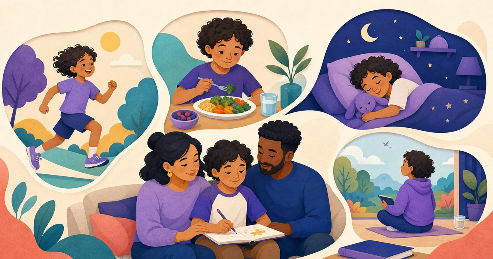
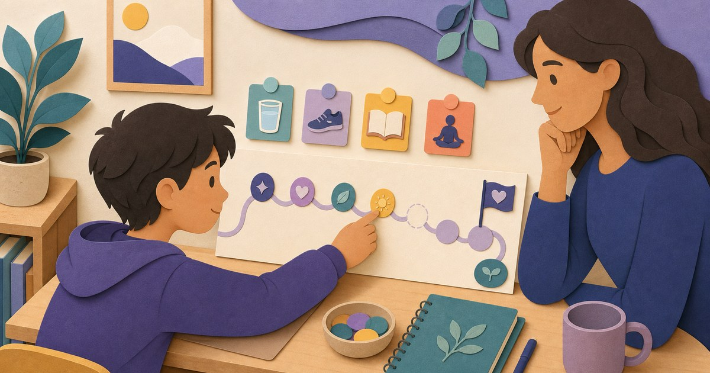
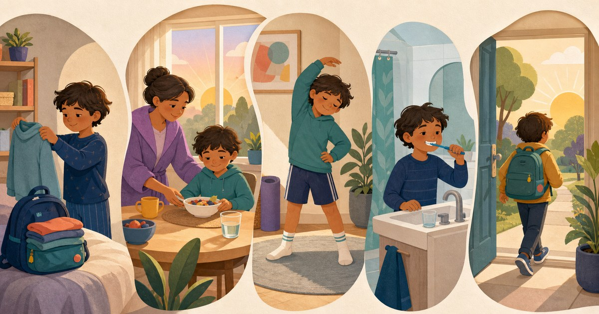
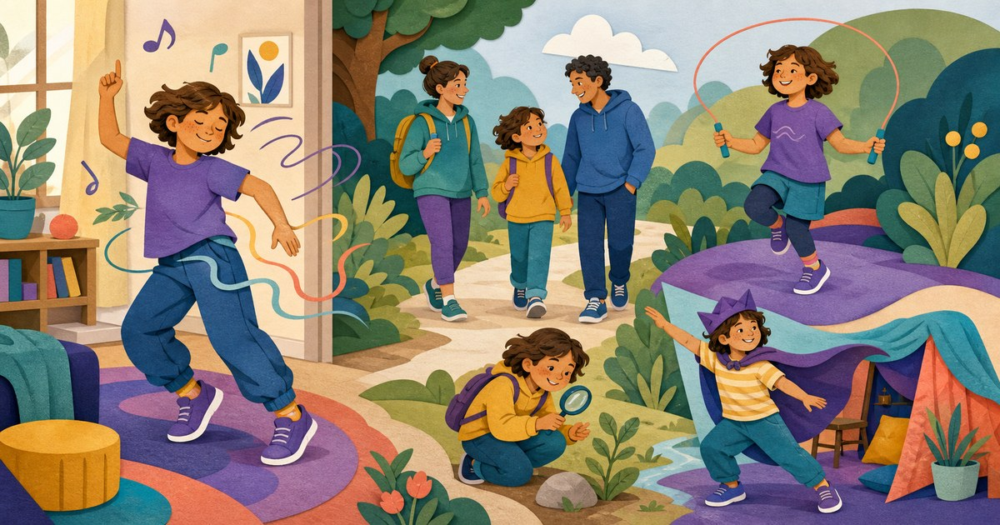
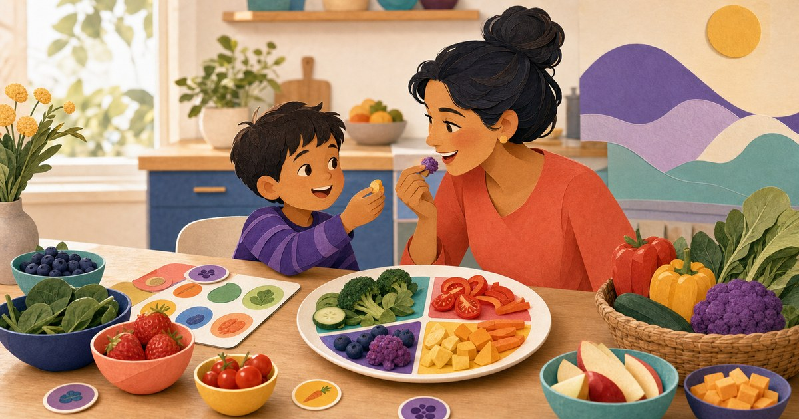
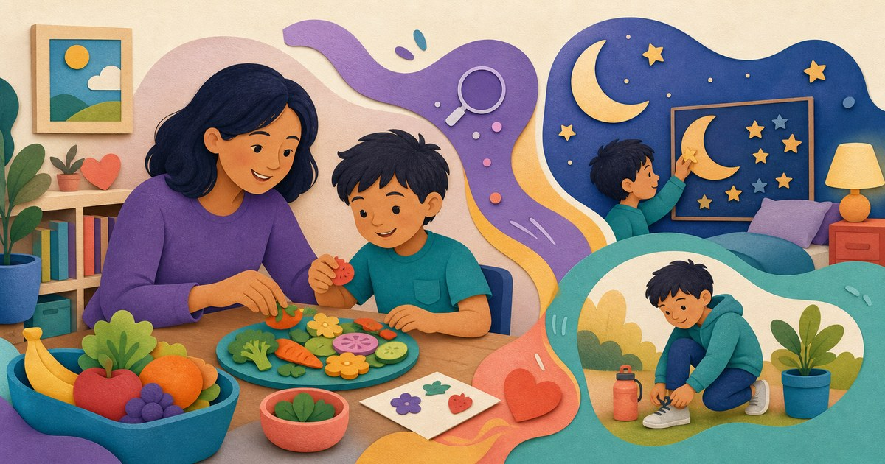
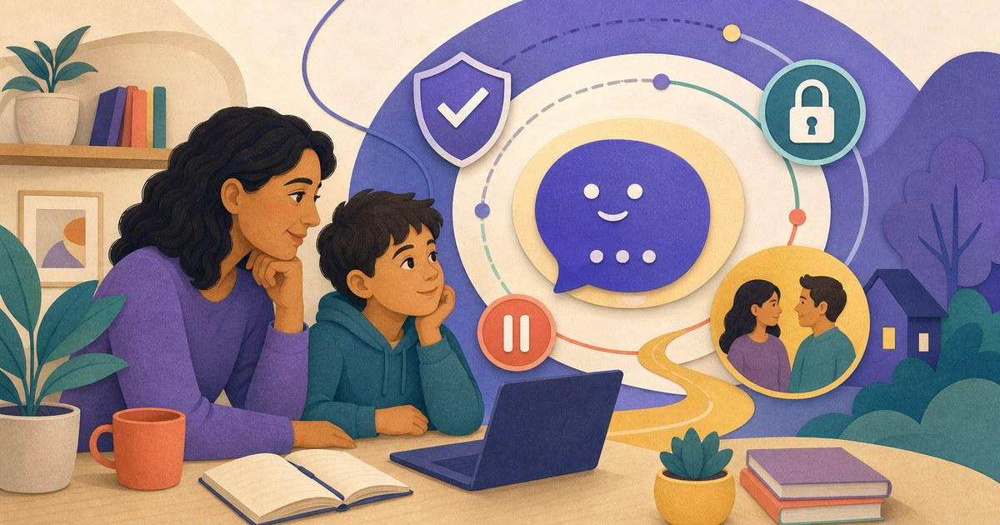

4 Healthy Habits for Kids: A Practical Parent Guide
Movement, eating, sleep, and screen balance with parent scripts and a one-week plan.
Read the guide →Source-backed guidance, realistic parent scripts, and low-pressure actions for caregivers of kids and teens ages 7–13+.
Start with the four-habits pillar or choose the question causing the most friction today. Every guide is complete on its own and links to the next useful step.
Turn broad goals into manageable mornings, bedtimes, actions, and check-ins.

Movement, eating, sleep, and screen balance with parent scripts and a one-week plan.
Read the guide →
Track attempts, recover from missed days, and choose a child-respecting app.
Read the guide →
Child-friendly SMART language plus concrete goals across all four ProudMe pillars.
See 20 examples →
A flexible 30-minute sequence, age-banded sleep guidance, parent scripts, and red flags.
Build a bedtime routine →
Night-before preparation, a calm sequence, and help for rushed mornings.
Plan a calmer morning →Find enjoyable movement beyond competition and all-or-nothing activity targets.

25 solo, indoor, outdoor, creative, family, and short-burst options.
Find their kind of movement →Build familiarity and skills through low-pressure play, shopping, cooking, and conversation.

Color, sorting, meal-building, shopping, cooking, and tasting without pressure.
Try 12 food games →
How discover, play, and real-life action connect in Plate Builder and Sleepy Pebble.
Meet ProudMe Learn →Set balanced family media boundaries and ask direct questions about child-focused AI.

The AAP 5 Cs, visible rules, transition warnings, replacement activities, and modeling.
Make a calmer media plan →
Consent, privacy, moderation, retention, human escalation, and honest limitations.
Use the parent checklist →